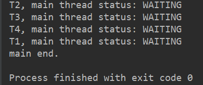

CountDownLatch介绍
CountDownLatch俗称门闩，利用它可以实现类似计数器的功能。比如有一个任务，它要等待其他4个任务执行完毕之后才能执行，此时就可以利用CountDownLatch来实现这种功能了。
我们使用CountDownLatch来实现这个功能：
1 | public class CountDownLatchDemo { |
运行结果：

CountDownLatch源码分析
首先看下CountDownLatch的构造方法：
1 | public CountDownLatch(int count) { |
CountDownLatch里有一个内部类，继承自AQS类；
new CountDownLatch时传入一个int类型数值，构造函数执行时，将CountDownLatch类的内部类Sync实例化并且将传入的数值传给Sync类，Sync类构造方法：
1 | Sync(int count) { |
Sync调用其父类AQS的方法将Stats设置为传入值；CountDownLatch同步方法的实现依赖于Sync类，而Sync类通过继承AQS类；
我们来看下CountDownLatch的两个主要的方法await()和countDown()的源码，countDown()的源码:
1 | public void countDown() { |
await()的源码：
1 | public void await() throws InterruptedException { |
1 | public final void acquireSharedInterruptibly(int arg) |
await()还有一个有参数的重载方法：
1 | public boolean await(long timeout, TimeUnit unit) |
总结
CountDownLatch方法的实现主要依赖于其内部类Sync，而Sync继承自AQS类，在AQS类的分析中，我们就已经介绍过了AQS类的模板代码；CountDownLatch的实现源自对AQS类的灵活运用。


本文首发于我在万达摆地摊's blog，转载请注明来源